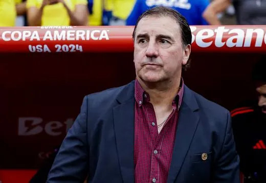
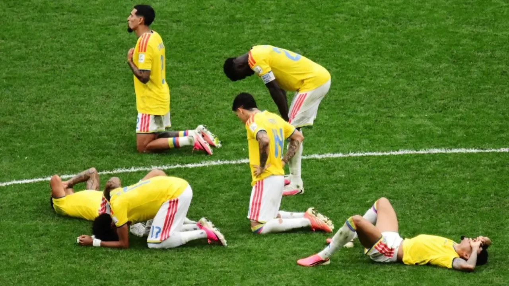

Portada de Habla Deportes
El show de las mañanas
Video: El refuerzo de Junior que nadie esperaba
La mesa analiza la llegada que casi nadie veía venir y lo que le puede aportar al equipo en lo que resta del año.
Fecha 19Liga BetPlay
Todos los partidos- Pasto 0, Junior 1, final, jue 12 nov. Partido de Junior.
- Llaneros 0, Boyacá Chicó 0, final, jue 12 nov.
- Int. de Bogotá 0, Santa Fe 2, final, vie 13 nov.
- Nacional 1, Once Caldas 1, final, sáb 14 nov.
- Águilas D. 0, Medellín 1, final, sáb 14 nov.
- Cúcuta 2, Jaguares 0, final, sáb 14 nov.
- Bucaramanga 1, Fortaleza 0, final, sáb 14 nov.
- Millonarios 2, Alianza 0, final, sáb 14 nov.
- Cali 2, Tolima 2, final, sáb 14 nov.
- Pereira 0, América 2, final, sáb 14 nov.


El partido de Junior
Junior ganó en Pasto y se acerca a los ocho
Pasto 0, Junior 1
- 14.ºen la tabla
- 22puntos
- 6pts del 8.º
El show de las mañanas
Todos los programas
Con Juan Salvador Bárcena
De lunes a viernes, de 10:00 a. m. a 12:00 m.
- L
- M
- M
- J
- V
- S
- D
Próximo programaCon la previa de Chile vs. Colombia, que se juega ese día a las 6:00 p. m.
Así va cada mañana
- Apertura y titularesLo que pasó anoche y lo que se juega hoy
- Junior en primer planoAnálisis, plantel y la previa del próximo partido
- Selección y mercadoConvocatoria, rivales y fichajes
- El debate de los oyentesLlamadas y mensajes al aire hasta las 12:00 m.
Dónde verlo
Programas anteriores
Horario y escaleta según el programa; títulos, duraciones y partido del martes: dato de ejemplo.
Junior FC
Ir a Junior FCCrónica
El día que Junior se coronó bicampeón: la noche en tres escenas
El pitazo final, la vuelta olímpica y la madrugada en la calle 72: tres momentos para recordar la noche del título.
· 7 min de lectura

Hinchada
Barranquilla rojiblanca: el barrio que llega al estadio desde las 3:00 p. m.Hace 6 horas
Plantel
Los once que más minutos suman en la Liga y por qué importaHace 9 horas
Hinchada
Video: El Metropolitano antes del clásico, en primera persona15 min
Tabla
Seis puntos del octavo: las cuentas de Junior para meterse entre los ochoAyer
Próximo partido
Junior contra Millonarios
Junior vs. Millonarios · Estadio Metropolitano
Ver la previa: Junior contra MillonariosRival, fecha y hora del próximo partido, titulares y horas: dato de ejemplo.
Liga BetPlay
Tabla| # | Equipo | PJ | DG | Pts |
|---|---|---|---|---|
| , zona de cuadrangulares1 |  Nacional Nacional | 19 | +20 | 40 |
| , zona de cuadrangulares2 | América | 19 | +16 | 36 |
| , zona de cuadrangulares3 |  Cali Cali | 19 | +16 | 35 |
| , zona de cuadrangulares4 |  Bucaramanga Bucaramanga | 19 | +14 | 35 |
| , zona de cuadrangulares5 |  Santa Fe Santa Fe | 19 | +12 | 34 |
| , zona de cuadrangulares6 | Medellín | 19 | +4 | 32 |
| , zona de cuadrangulares7 | Millonarios | 19 | +11 | 30 |
| , zona de cuadrangulares8 | Once Caldas | 19 | +4 | 28 |
| 9 |  Tolima Tolima | 19 | +2 | 27 |
| 10 | Cúcuta | 19 | -5 | 27 |
| 11 |  Águilas D. Águilas D. | 19 | 0 | 25 |
| 12 | Llaneros | 19 | -3 | 24 |
| 13 |  Int. de Bogotá Int. de Bogotá | 19 | 0 | 23 |
| 14 |  Junior Junior | 19 | -1 | 22 |
| 15 |  Boyacá Chicó Boyacá Chicó | 19 | -14 | 20 |
| 16 |  Alianza Alianza | 19 | -15 | 18 |
| 17 | Pereira | 19 | -12 | 17 |
| 18 |  Pasto Pasto | 19 | -17 | 15 |
| 19 |  Jaguares Jaguares | 19 | -20 | 13 |
| 20 | Fortaleza | 19 | -12 | 12 |
Cuadrangulares (1.º a 8.º)
Fuente: Datafactory · actualizado el 16 nov 2026, 12:55 p. m.
Shorts
-

Video: Qué significa «oxigenar» una lista, 44 segundos
-
Video: Tres datos de la Fecha 19 en menos de un minuto, 48 segundos
-

Video: Así se prepara la hinchada para Colombia vs. Perú, 33 segundos
-

Video: Pregunta del día: ¿Qué lateral izquierdo quieres ver?, 19 segundos
-

Video: ¿Titular o suplente? El debate del extremo, 36 segundos
5 Shorts · 3:00 en total
Títulos y duraciones de los Shorts: dato de ejemplo.
Selección Colombia
Ir a la SelecciónPróximo partido

Colombia vs. Perú
Amistoso · Fecha FIFA de noviembre
· Caracol TV
Faltan7días
Previa y convocatoria
- Perú, en cinco claves: cómo juega y dónde duele
- Video: Debate: ¿es Perú el rival ideal para esta fecha FIFA?
Hora y canal del partido: dato de ejemplo.
Mercado de fichajes
Ver todo el mercado de fichajes3 de 5 movimientos van hacia Junior
- Cerrado
- Negociando
- Rumor
- NegociandoExtremo derecho con pasado europeoMedellín a Junior
- CerradoVolante de contenciónTolima a Junior
- RumorDelantero argentinoMillonarios a Junior
- NegociandoExtremo izquierdoAmérica a Medellín
- CerradoLateral izquierdoMedellín a Millonarios
Estados de ejemplo, definidos por la redacción.
El programa en vivo
Ir a En vivoAl aire hasta las 12:00 m.Próximo programa · lunes a las 10:00 a. m.
El show de las mañanas, en vivo desde Barranquilla
Míralo aquí, sin salir de la web, o ponte al día con los programas anteriores. Lunes a viernes, 10:00 a. m. a 12:00 m.
Ahora: Apertura y titulares · Después: Junior en primer plano
Noticias por tema
Ver todasFútbol colombiano
Cali y Tolima empataron 2 a 2 en la Fecha 19: lo que deja el resultado arriba
Cali cierra la fase de todos contra todos tercero con 35 puntos y Tolima, noveno con 27, se queda a dos de la zona de los ocho.
Europa
Un grande de Inglaterra pierde el liderato: tres razones del tropiezo
Una racha de cuatro partidos sin ganar y un problema de salida que el rival supo explotar. Análisis de ejemplo.
Colombianos en el exterior
El extremo colombiano que gana minutos en un club de Portugal
Pasó de suplente a titular en tres semanas. Lo que cambió en su rol y lo que le pide el entrenador.
Opinión
Todas las columnasLo que se espera de una final de barrio
Cómo se vive un partido grande en Barranquilla, antes y después del pitazo.
La Selección y el once ideal
Por qué todos tenemos una alineación en la cabeza.
Equilibrio o creatividad: el dilema del medio campo
Dos formas de armar el centro de la cancha y lo que cada una le cuesta al equipo.
Comunidad
Encuesta del hincha
Síguenos
Síguenos donde prefieras.